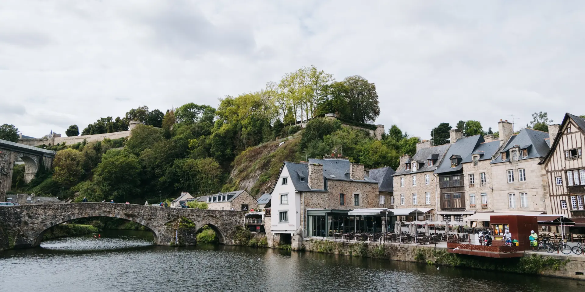

Le centre historique
Flânez place des Merciers et dans les rues voisines pour observer les maisons à pans de bois, les façades et les petites boutiques.
À faire : lever les yeux et choisir votre maison préférée en famille.
Jour 4 · 12 septembre · Escale bretonne
Maisons à pans de bois, ruelles pavées et port sur la Rance : une parenthèse médiévale à savourer avant de poursuivre vers le Mont-Saint-Michel.

Flânez place des Merciers et dans les rues voisines pour observer les maisons à pans de bois, les façades et les petites boutiques.
À faire : lever les yeux et choisir votre maison préférée en famille.

Cette rue pavée relie la ville haute au port, en passant par la porte du Jerzual puis la rue du Petit-Fort. C’est l’un des décors emblématiques de Dinan.
À prévoir : une pente marquée et une remontée à votre rythme.

Au bas de la ville, les quais offrent une autre ambiance : bateaux, eau et façades au bord de la rivière.
À faire : une pause sur les quais avant de regagner le centre.

Arrêtez-vous devant la basilique Saint-Sauveur, puis gagnez le Jardin anglais juste derrière pour une pause verdoyante et les vues vers la vallée de la Rance.
Notre conseil : un bon arrêt dans la ville haute si vous évitez la descente au port.

Repérez les portes et les fortifications. Le château du duc Jean IV permet de prolonger la découverte avec un parcours consacré à la vie et au pouvoir au Moyen Âge.
Pour une escale courte : privilégiez les extérieurs ; la visite du château demande du temps en plus.

Ce beffroi de la fin du XVe siècle se découvre au cœur de la vieille ville. La montée offre un panorama sur les toits si vous choisissez de le visiter.
En option : une visite payante avec des escaliers, selon les horaires d’ouverture.
Une proposition, à adapter à votre rythme
Version courte, environ 1 h à 1 h 30 : restez dans la ville haute, entre le centre, Saint-Sauveur et le Jardin anglais. Les durées sont des estimations de balade, sans visite intérieure ni repas.
Informations repérées le 5 septembre 2026. Consultez les pages officielles pour les horaires, les tarifs et les conditions d’accès avant votre passage.